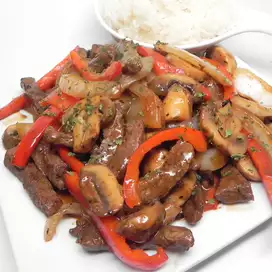

Easy Ginger Beef Recipe

Description:
It’s a little extra effort to make this ginger beef versus my other
favorite takeout dishes, but let me tell you that effort really goes the
extra mile. Even so this ginger beef can still be on your dinner table in
just 30 minutes! Crispy and tender beef tossed in that bold, sweet and
spicy sauce? It’s like nothing else! I’ll be surprised if you
end up with any leftovers.
Ingredients:
- 1 pound round steak, thinly sliced
- 1(1 inch) piece fresh ginger root, peeled and thinly sliced
- 1 tablespoon soy sauce
- 1 teaspoon butter
- 1 red bell pepper, chopped
- 1 onion, chopped
- 12 mushrooms, sliced
- 1/4 cup sweet and sour sauce
- 4 cups cooked rice
Steps:
-
Place steak, ginger, and soy sauce in a bowl; turn to coat steak. Cover
tightly; marinate in the refrigerator for at least 30 minutes or upto
overnight
-
Heat a wok over high heat; pour in beef mixture. COver wok; cook until
beef is browned, about 5 minutes. Remove beef from wok.
-
Heat butter in wok over high heat; stir in bellpepper, onion, mushrooms,
and sweet and sour sauce. Cover and cook until vegetables begin to
soften, about 3 minutes. Stir cooked beef into vegetable mixture; cook
until heated through, about 2 minutes. Serve over cooked rice.